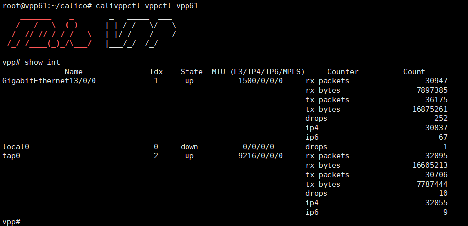
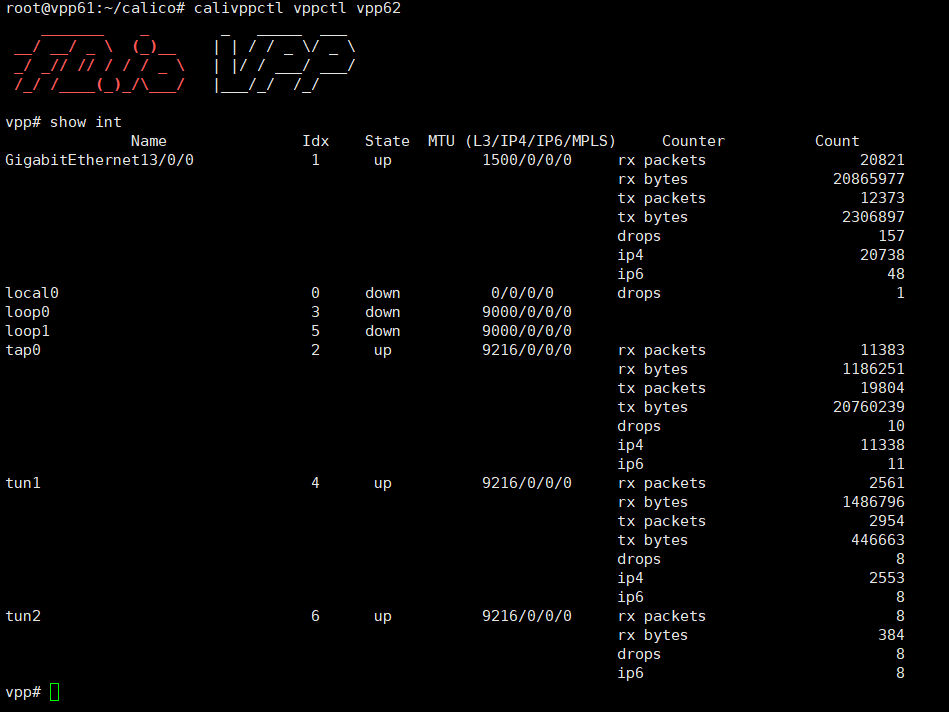
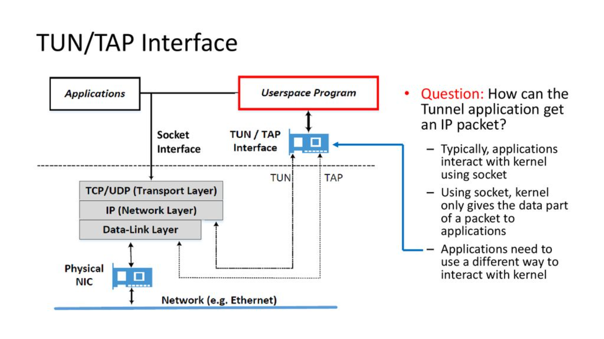
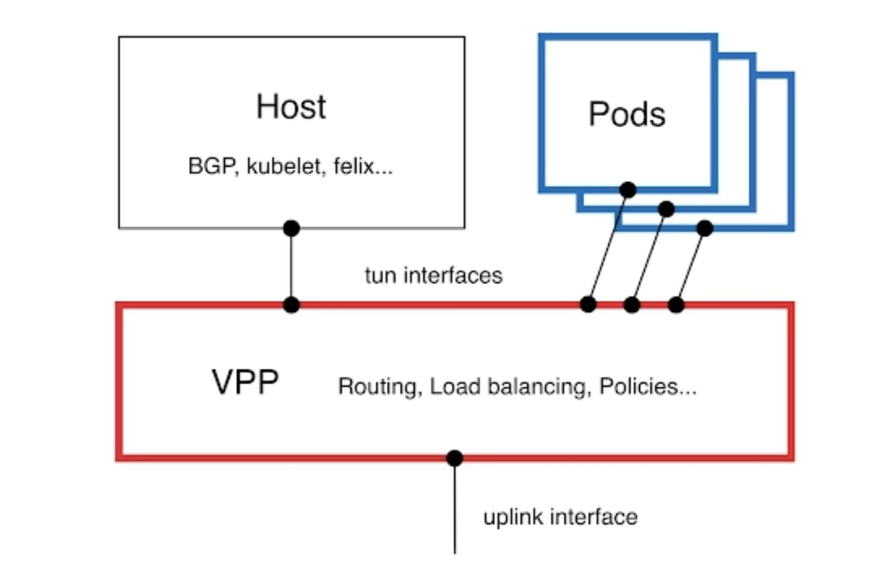

9. calico vpp vmware
date: 2023-02-05
https://projectcalico.docs.tigera.io/getting-started/kubernetes/vpp/getting-started
VMware VM u2204 3台，双网卡: vmxnet3
hostnamectl set-hostname vpp61
cat << EOF >> /etc/hosts
192.168.68.61 vpp61
192.168.68.62 vpp62
192.168.68.63 vpp63
EOF
apt update
apt -y full-upgrade
[ -f /var/run/reboot-required ] && reboot -f
ln -sf ../usr/share/zoneinfo/Asia/Shanghai /etc/localtime
vi /etc/default/grub
GRUB_CMDLINE_LINUX="iommu=pt intel_iommu=on"
#GRUB_CMDLINE_LINUX="default_hugepagesz=1G hugepagesz=1G hugepages=4 iommu=pt intel_iommu=on"
update-grub
echo "vfio-pci" > /etc/modules-load.d/95-vpp.conf
echo "vm.nr_hugepages = 1024" >> /etc/sysctl.conf
reboot
cat /proc/cmdline | grep -e iommu=pt -e intel_iommu=on -e huge
dmesg | grep -e DMAR -e IOMMU
cat /proc/meminfo | grep Huge
lscpu | grep NUMA
lshw -businfo -c network
pci@0000:0b:00.0 network VMXNET3 Ethernet Controller
pci@0000:13:00.0 network VMXNET3 Ethernet Controller
apt install driverctl -y
driverctl list-devices
... 0000:0b:00.0 vmxnet3
... 0000:13:00.0 vmxnet3
swapoff -a
sed -i '/swap/ s/^\(.*\)$/#\1/g' /etc/fstab
free -h
tee /etc/modules-load.d/containerd.conf <<EOF
overlay
br_netfilter
EOF
tee /etc/modules-load.d/ipvs.conf <<EOF
ip_vs
ip_vs_rr
ip_vs_wrr
ip_vs_sh
br_netfilter
bridge
nf_conntrack
EOF
cat <<EOF >> /etc/sysctl.conf
net.ipv4.ip_forward = 1
net.bridge.bridge-nf-call-ip6tables = 1
net.bridge.bridge-nf-call-iptables = 1
vm.swappiness=0
EOF
sysctl -p
export https_proxy=http://10.1.1.12:8118
wget https://github.com/containerd/containerd/releases/download/v1.6.14/cri-containerd-cni-1.6.14-linux-amd64.tar.gz
tar zxvf cri-containerd-cni-1.6.14-linux-amd64.tar.gz -C /
mv /etc/cni/net.d/10-containerd-net.conflist /etc/cni/net.d/10-containerd-net.conflist.bak
mkdir -p /etc/containerd
containerd config default > /etc/containerd/config.toml
sed -i 's#registry.k8s.io#registry.aliyuncs.com/google_containers#g' /etc/containerd/config.toml
# pause:3.6 --->>> pause:3.8
sed -i 's/pause:3.6/pause:3.8/g' /etc/containerd/config.toml
sed -i 's/SystemdCgroup = false/SystemdCgroup = true/g' /etc/containerd/config.toml
systemctl daemon-reload
systemctl enable containerd.service
systemctl restart containerd.service
systemctl status containerd.service
apt install -y apt-transport-https socat
curl https://mirrors.aliyun.com/kubernetes/apt/doc/apt-key.gpg | apt-key add -
cat <<EOF >/etc/apt/sources.list.d/kubernetes.list
deb https://mirrors.aliyun.com/kubernetes/apt/ kubernetes-xenial main
EOF
apt update
apt install -y kubeadm=1.25.5-00 kubelet=1.25.5-00 kubectl=1.25.5-00
systemctl enable kubelet.service --now
kubeadm config print init-defaults --component-configs KubeletConfiguration
# cgroupDriver: systemd #
# kubeadm config images pull
kubeadm config images pull --kubernetes-version=v1.25.5 --image-repository registry.aliyuncs.com/google_containers
kubeadm init --kubernetes-version=v1.25.5 \
--image-repository registry.aliyuncs.com/google_containers \
--pod-network-cidr=10.244.0.0/16 \
--apiserver-advertise-address=192.168.68.61
cat <<EOF >> ~/.bashrc
alias kp='kubectl get pod -o wide --all-namespaces'
alias wkp='watch -n 1 kubectl get pod -o wide --all-namespaces'
alias ks='kubectl get svc -o wide --all-namespaces'
alias kn='kubectl get node -o wide --all-namespaces'
alias k='kubectl'
EOF
#kubectl taint nodes --all node-role.kubernetes.io/control-plane-
#kubectl taint nodes --all node-role.kubernetes.io/master-
wget https://raw.githubusercontent.com/projectcalico/calico/v3.24.5/manifests/tigera-operator.yaml
cat << EOF > calicovpp.img.pull.sh
time crictl pull docker.io/calico/apiserver:v3.24.5
time crictl pull docker.io/calico/cni:v3.24.5
time crictl pull docker.io/calico/kube-controllers:v3.24.5
time crictl pull docker.io/calico/node:v3.24.5
time crictl pull docker.io/calico/pod2daemon-flexvol:v3.24.5
time crictl pull docker.io/calico/typha:v3.24.5
time crictl pull docker.io/calicovpp/agent:v3.24.0
time crictl pull docker.io/calicovpp/vpp:v3.24.0
time crictl pull quay.io/tigera/operator:v1.28.5
EOF
bash -xv calicovpp.img.pull.sh
kubectl create -f tigera-operator.yaml
wget https://raw.githubusercontent.com/projectcalico/vpp-dataplane/v3.24.0/yaml/calico/installation-default.yaml
vi installation-default.yaml
apiVersion: operator.tigera.io/v1
kind: Installation
metadata:
name: default
spec:
# Configures Calico networking.
calicoNetwork:
linuxDataplane: VPP
ipPools:
- blockSize: 24
cidr: 10.244.0.0/16
encapsulation: None ##### NO IPIP && NO VXLAN
---
kubectl create -f installation-default.yaml
# If you have configured hugepages on your machines
wget https://raw.githubusercontent.com/projectcalico/vpp-dataplane/v3.24.0/yaml/generated/calico-vpp.yaml
vi calico-vpp.yaml
...
socksvr {
socket-name /var/run/vpp/vpp-api.sock
}
dpdk {
dev 0000:13:00.0 { num-rx-queues 1 num-tx-queues 1 }
}
plugins {
plugin default { enable }
plugin dpdk_plugin.so { enable }
plugin calico_plugin.so { enable }
plugin ping_plugin.so { enable }
plugin dispatch_trace_plugin.so { enable }
}
buffers {
buffers-per-numa 131072
}
vpp_dataplane_interface: ens192
vpp_uplink_driver: "none"
...
kubectl create -f calico-vpp.yaml
curl https://raw.githubusercontent.com/projectcalico/vpp-dataplane/v3.24.0/test/scripts/vppdev.sh | tee /usr/local/bin/calivppctl
chmod +x /usr/local/bin/calivppctl
driverctl list-devices
0000:0b:00.0 vmxnet3
0000:13:00.0 vfio-pci #### vfio-pci dpdk 纳管
calivppctl vppctl [NODENAME]
calivppctl vppctl vpp62




http://www.tnblog.net/hb/article/details/7885
https://tnblog.net/hb/article/details/7233
https://slideplayer.com/slide/17437344/